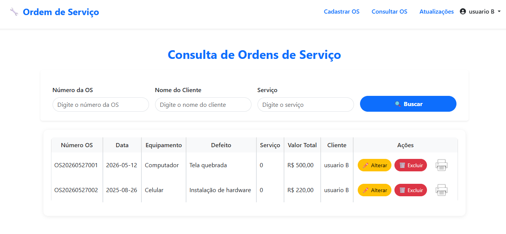

Olá, sou a Lavínia, estudante de Desenvolvimento de Software Multiplataforma na FATEC de SJC, com foco em desenvolvimento front-end e organização de projetos. Tenho perfil colaborativo, gosto de trabalhar em equipe e contribuir na resolução de problemas de forma prática.
Meu Objetivo é aplicar meus conhecimentos em projetos reais, criando soluções funcionais e bem estruturadas, enquanto continuo evoluindo como desenvolvedora
Ferramentas que utilizo no desenvolvimento dos meus projetos:
Estrutura de páginas web
Estilização e layout responsivo
Interatividade e lógica no front-end
Lógica e desenvolvimento back-end
Hypertext Preprocessor
Framework de layout responsivo e componentes
Controle de versão e organização do código
Hospedagem de projetos e colaboração em código
Disposição para colaborar e contribuir em equipe
Busca constante por melhorias e novas soluções
Comunicação clara na troca de ideias e soluções
Capacidade de analisar e resolver problemas de forma prática
Aqui você encontra alguns dos projetos que desenvolvi e contribui, aplicando na prática meus conhecimentos e evoluindo a cada novo desafio.

Aplicação web desenvolvida a partir da API da Câmara dos Deputados, com foco em apresentar dados públicos de forma clara, organizada e acessível para diferentes perfis de usuários, como cidadãos, jornalistas e professores.

Aplicação web que utiliza dados em tempo real via API para monitorar indicadores ambientais, como qualidade do ar, temperatura e clima, com foco também na conscientização dos usuários e registro de ações.

Plataforma para abertura, gerenciamento e controle de solicitações técnicas de TI, permitindo acompanhamento de serviços, status e administração de demandas.
O acesso aos dados da Câmara dos Deputados pode ser complexo e pouco intuitivo para grande parte da população. Eleitores, professores e jornalistas enfrentam dificuldades para localizar e interpretar informações relevantes, muitas vezes dispersas e sem uma visualização estruturada.
Centralizar e simplificar o acesso aos dados da Câmara dos Deputados, tornando a consulta mais clara e acessível.
Scrum com 3 sprints de 3 semanas, com revisão ao final de cada ciclo para melhorias contínuas.
Atuei como Product Owner, auxiliando na definição de requisitos, organização do GitHub, estruturação das entregas e alinhamento com o cliente.
Aplicação funcional que permite a visualização simplificada de dados públicos da Câmara dos Deputados, facilitando o entendimento por diferentes perfis de usuários.

A obtenção de dados ambientais nem sempre é clara ou acessível. Informações sobre qualidade do ar e água costumam estar dispersas e pouco intuitivas, dificultando o acompanhamento pela população.
Centralizar dados ambientais em tempo real e apresentar informações de forma clara, incentivando a conscientização sobre poluição urbana.
Estruturação da interface a partir de protótipos no Figma, seguida do desenvolvimento do front-end com foco em usabilidade.
Atuei no desenvolvimento do front-end, criação do design no Figma, implementação da interface e organização da estrutura dos dados exibidos.
Aplicação funcional com visualização clara de dados ambientais em tempo real, promovendo melhor compreensão e conscientização sobre poluição urbana.
Aqui estão alguns dos eventos e experiências que marcaram minha jornada como desenvolvedora, contribuindo para meu crescimento profissional e pessoal.
Maio de 2026
Evento focado em inovação, tecnologia e negócios, com palestras, networking e exposição de projetos desenvolvidos por empresas e instituições da região.
CertificadoCertificações e cursos complementares que contribuíram para o desenvolvimento das minhas competências técnicas e profissionais.
Curso voltado aos conceitos de economia circular, abordando práticas sustentáveis para reduzir desperdícios, reutilizar recursos e promover modelos de produção e consumo mais eficientes e responsáveis.
CertificadoCapacitação em normas e práticas de segurança no trabalho, com foco na prevenção de acidentes e na identificação de riscos ocupacionais.
Certificado